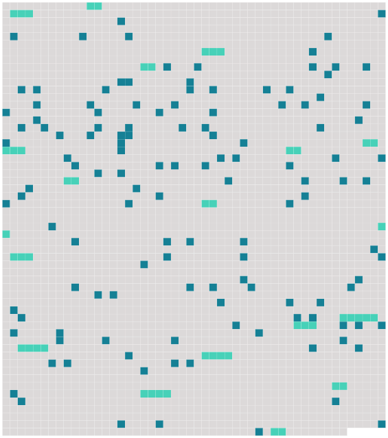

Longueur nb maillons : 147 mentions |
 |
» A CHEVAL [1 phrases] [Hector de Gribelin] avait été élevé en province, dans le manoir paternel, par un vieil abbé précepteur. [1 phrases] Puis, à vingt ans, on lui avait cherché une position, et [il] était entré, commis à quinze cents francs, au ministère de la Marine.
[Il] avait échoué sur cet écueil comme tous ceux qui ne sont point préparés de bonne heure au rude combat de la vie, tous ceux qui voient l'existence à travers un nuage, qui ignorent les moyens et les résistances, en qui on n'a pas développé dès l'enfance des aptitudes spéciales, des facultés particulières, une âpre énergie à la lutte, tous ceux à qui on n'a pas remis une arme ou un outil dans la main.
[Ses] trois premières années de bureau furent horribles.
[Il] avait retrouvé quelques amis de [sa] famille, vieilles gens attardés et peu fortunés aussi, qui vivaient dans les rues nobles, les tristes rues du faubourg Saint-Germain ; et [il] s'était fait un cercle de connaissances. [3 phrases]
[Hector de Gribelin] rencontra dans ce monde une jeune fille noble et pauvre comme [lui] , et l'épousa. [2 phrases]
Mais voilà que, vers le printemps, un travail supplémentaire fut confié à [l'employé] par [son] chef, et [il] reçut une gratification extraordinaire de trois cents francs.
En rapportant cet argent, [il] dit à [sa] femme : [1 phrases] « Ma foi, s'écria [Hector] , une fois n'est pas coutume ; nous louerons un break pour toi, les petits et la bonne, et [moi] [je] prendrai un cheval au manège. Cela [me] fera du bien. [1 phrases]
Chaque soir, en rentrant du bureau, [Hector] saisissait [son] fils aîné, le plaçait à califourchon sur [sa] jambe, et, en le faisant sauter de toute [sa] force, [il] lui disait : [1 phrases]
» [1 phrases]
[il] avait été à bonne école, et, une fois la bête entre [ses] jambes, [il] ne craignait rien, mais rien!
[Il] répétait à [sa] femme en se frottant les mains : Tu verras comme [je] monte ; et, si tu veux, nous reviendrons par les Champs-Elysées au moment du retour du Bois. Comme nous ferons bonne figure, [je] ne serais pas fâché de rencontrer quelqu'un du Ministère. [2 phrases] [Il] descendit aussitôt, pour examiner [sa] monture.
[Il] avait fait coudre des sous-pieds à [son] pantalon, et [manoeuvrait] une cravache achetée la veille.
[Il] leva et [palpa] , l'une après l'autre, les quatre jambes de la bête, [tâta] le cou, les côtes, les jarrets, éprouva du doigt les reins, [ouvrit] la bouche, [examina] les dents, [déclara] [son] âge, et, comme toute la famille descendait, [il] fit une sorte de petit cours théorique et pratique sur le cheval en général et en particulier sur celui -là, qu' [il] reconnaissait excellent.
Quand tout le monde fut bien placé dans la voiture, [il] vérifia les sangles de la selle ; puis, s'enlevant sur un étrier, [retomba] sur l'animal, qui se mit à danser sous la charge et faillit désarçonner [son cavalier]
[Hector, ému] , tâchait de le calmer :
» [1 phrases]
» [1 phrases] Tous les regards étaient tendus sur [lui] [Il] trottait à l'anglaise en exagérant les ressauts. A peine était [-il] retombé sur la selle qu' [il] rebondissait comme pour monter dans l'espace.
Souvent [il] semblait prêt à s'abattre sur la crinière ; et [il] tenait [ses] yeux fixes devant [lui] , ayant la figure crispée et les joues pâles.
[Sa] femme, gardant sur ses genoux un des enfants, et la bonne qui portait l'autre, répétaient sans cesse : [1 phrases] Le cheval, effrayé par ces clameurs, finit par prendre le galop, et, pendant que [le cavalier] s'efforçait de l'arrêter, le chapeau roula par terre.
Il fallut que le cocher descendit de [son] siège pour ramasser cette coiffure, et, quand [Hector] l'eut reçue de [ses] mains, [il] s'adressa de loin à [sa] femme : [1 phrases]
Bien que le cocher prît soin des trois chevaux, [Hector] à tout moment se levait pour aller voir si le sien ne manquait de rien ; et [il] le caressait sur le cou, lui faisant manger du pain, des gâteaux, du sucre.
[Il] déclara : Il [m'] a même un peu secoué dans les premiers moments ; mais tu as vu que [je] m'y suis vite remis : il a reconnu [son maître] , il ne bougera plus maintenant.
» [5 phrases]
Le cheval d' [Hector] , dès qu'il eut dépassé l'Arc de Triomphe, fut saisi soudain d'une ardeur nouvelle, et il filait à travers les roues, au grand trot, vers l'écurie, malgré toutes les tentatives d'apaisement de [son cavalier] [1 phrases] Une vieille femme en tablier traversait la chaussée d'un pas tranquille ; elle se trouvait juste sur le chemin d' [Hector] , qui arrivait à fond de train.
Impuissant à maîtriser [sa] bête, [il] se mit à crier de toute [sa] force : [4 phrases]
Des voix criaient :
»
» En une seconde, un groupe furieux, gesticulant, vociférant, se forma autour de [lui] [6 phrases]
» Un troisième tenait [son] cheval. [1 phrases] [Sa] femme s'élança, la bonne perdait la tête, les marmots piaillaient. [Il] expliqua qu' [il] allait rentrer, qu' [il] avait renversé une femme, que ce n'était rien.
Et [sa] famille, affolée, s'éloigna. [1 phrases] [Il] donna [son] nom, Hector de Gribelin, attaché au ministère de la Marine ; et on attendit des nouvelles de la blessée. [3 phrases] Quand [il] sut qu'elle n'était pas morte, [Hector] reprit espoir et [promit] de subvenir aux frais de sa guérison.
Puis [il] courut chez le pharmacien. [3 phrases]
[Hector] lui parla : [4 phrases]
» [2 phrases] Voulez [-vous] que je m'en charge??
»
[Sa] femme [l'] attendait dans les larmes : [il] l'apaisa. « Ce n'est rien, cette dame Simon va déjà mieux, dans trois jours il n'y paraîtra plus ; [je] l'ai envoyée dans une maison de santé ; ce n'est rien. [1 phrases] En sortant de [son] bureau, le lendemain, [il] alla prendre des nouvelles de Mme Simon.
[Il] l'a trouva en train de manger un bouillon gras d'un air satisfait. [1 phrases]
» dit [-il]
Elle répondit : [3 phrases] [Il] attendit trois jours, puis [il] revint.
La vieille femme, le teint clair, l'oeil limpide, se mit à geindre en [l'] apercevant : [1 phrases]
» [Il] demanda le médecin.
Le médecin leva les bras : [2 phrases] Je dois croire ce qu'elle me dix, [monsieur] ; je ne suis pas dedans. [5 phrases]
[Hector éperdu] venait chaque jour ; chaque jour [il] la trouvait tranquille et sereine, et déclarant : [1 phrases]
» [2 phrases] Alors [Hector] assembla quatre grands médecins qui se réunirent autour de la vieille. [5 phrases]
Et, quand [Hector] apporta cette nouvelle à [sa] femme, elle se laissa choir sur une chaise en balbutiant :
»
» |
 |
La ressource peut être téléchargée sur la page Ortolang
Si vous avez des questions ou vous voyez des erreurs, merci d'envoyer un mail à silvia.federzoni89@gmail.com
Site développé par S. Federzoni (contact)